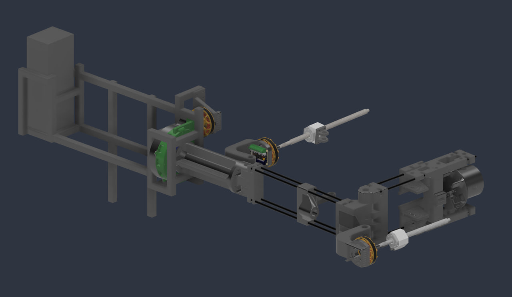
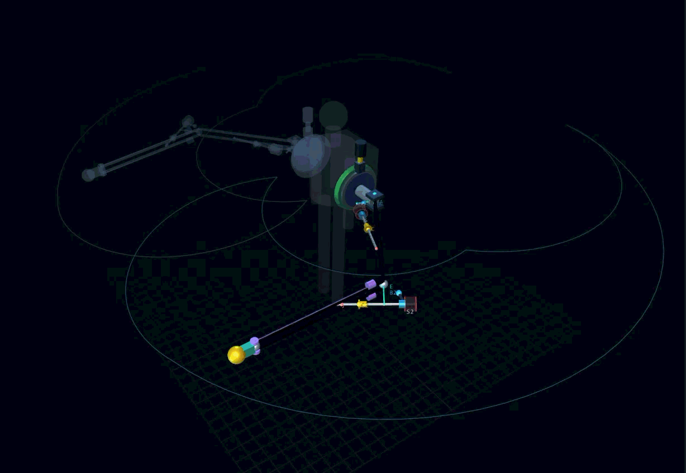
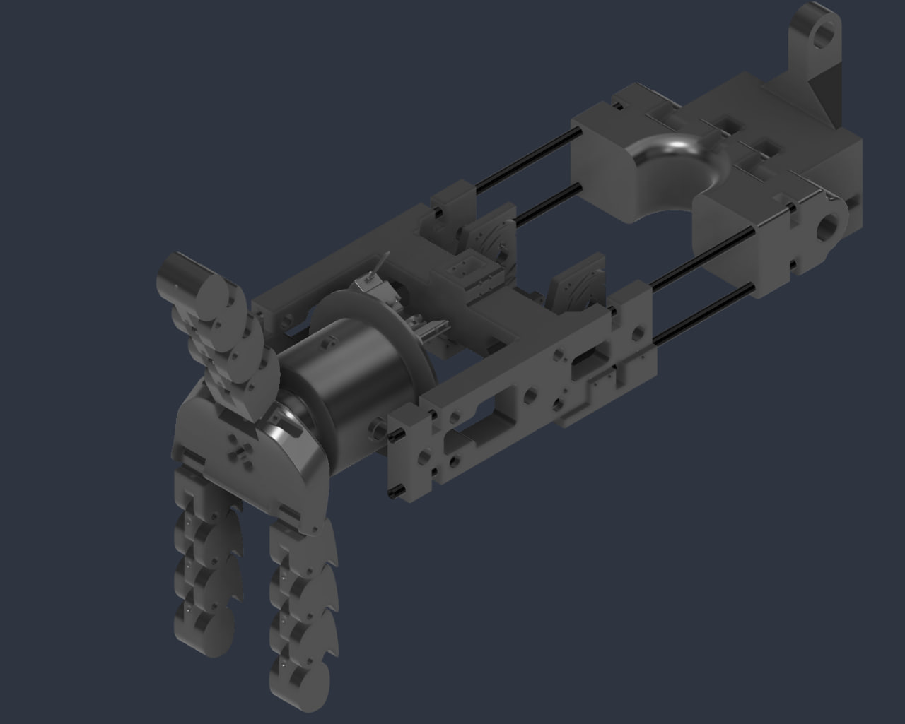
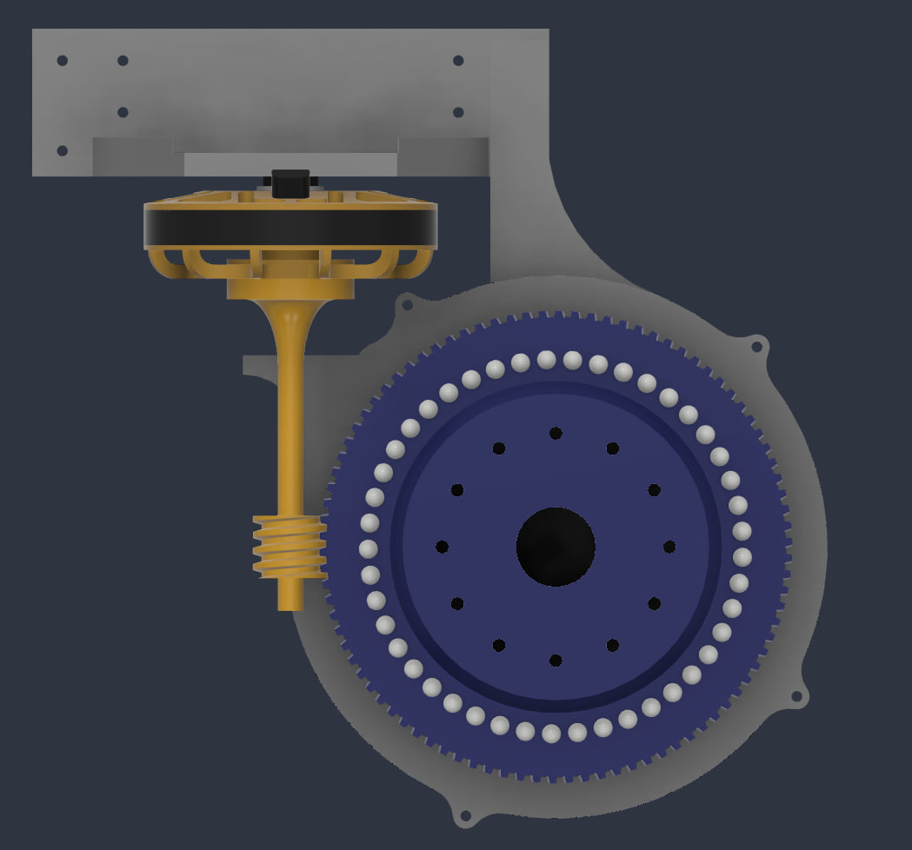
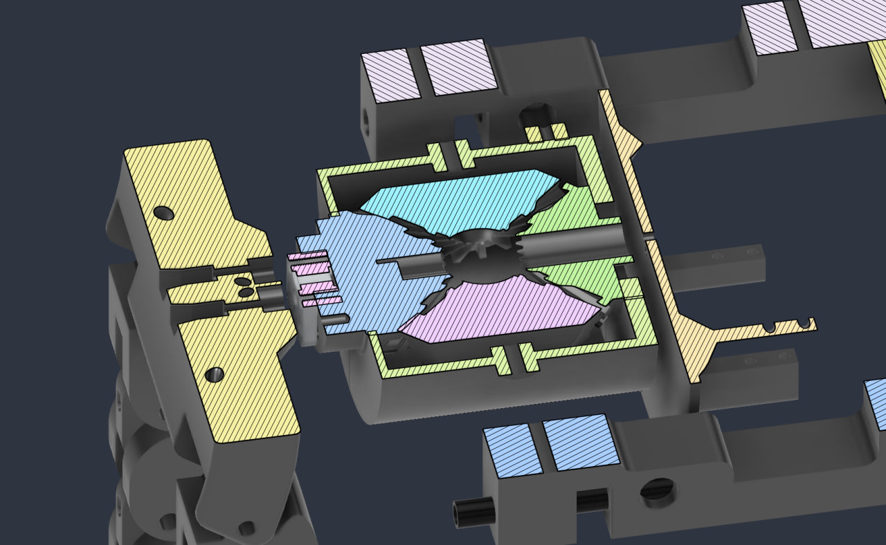
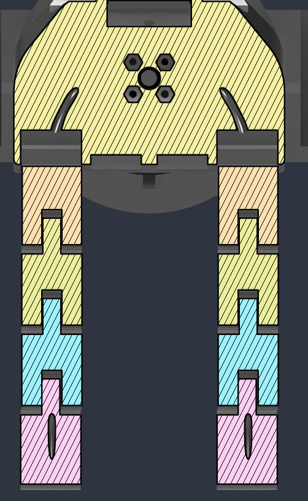

← All projects
Full assembly, from the body mount to the gripper Teleoperation simulation Gripper with jointed fingers Joint drive: pancake motor turning a worm gear Section view through the wrist gearing Section view of the finger joints
Currently building
2026 – now
Motion-Tracked Third Arm
A wearable robotic third arm that follows tracked motion through teleoperation. In the video I'm wearing it and walking around with it on.
- Status
- Wearable prototype, in progress
- Tools
- Fusion 360, simulation
- Skills
- Robotics, teleoperation, mechanism design
The problem
Placeholder: Ethan will write this part.
The build
Placeholder: Ethan will write this part.
What I'm learning
Placeholder: Ethan will write this part.
Gallery





